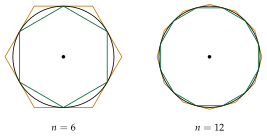
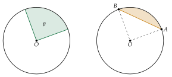

Un cuadrilátero es cíclico (o inscriptible) si existe una circunferencia que pasa por sus cuatro vértices.
Un cuadrilátero convexo es cíclico si y solo si sus ángulos opuestos son suplementarios.
(⇒) Si ABCD está inscrito, ∠A y ∠C interceptan los arcos BCD⌢ y BAD⌢, que juntos forman la circunferencia. Por el teorema del ángulo inscrito, m∠A+m∠C=21(360∘)=180∘.
(⇐) Supongamos m∠A+m∠C=180∘ y sea C la circunferencia por A, B, D.
Si C no estuviera en C, el rayo BC cortaría a C en un punto C′=C del arco BD⌢ que no contiene a A.
Por la ida, ABC′D es cíclico y m∠BC′D=180∘−m∠A=m∠BCD.
Pero uno de los ángulos ∠BCD, ∠BC′D es exterior al triángulo △DCC′ y el otro es interior no adyacente, así que no pueden ser congruentes (teorema del ángulo exterior).
La contradicción prueba que C∈C.
Un paralelogramo es cíclico si y solo si es un rectángulo. Un trapecio es cíclico si y solo si es isósceles.
En todo cuadrilátero cíclico ABCD, el producto de las diagonales es igual a la suma de los productos de los lados opuestos: AC⋅BD=AB⋅CD+AD⋅BC.
Sea E el punto de AC tal que ∠ABE≅∠DBC (existe por la construcción de ángulos y la barra transversal).
Como ∠BAE=∠BAC≅∠BDC (inscritos en el arco BC⌢), los triángulos △ABE y △DBC son semejantes por A-A, y DCAE=DBAB⟹AE⋅BD=AB⋅CD. Además ∠ABD≅∠EBC (se les suma el mismo ∠EBD) y ∠ADB≅∠ECB (inscritos en AB⌢), así que △ABD∼△EBC, y ADEC=BDBC⟹EC⋅BD=AD⋅BC. Sumando, (AE+EC)BD=AB⋅CD+AD⋅BC, y AE+EC=AC.
Mueva los vértices sobre la circunferencia: los ángulos opuestos suman 180° y se cumple la igualdad de Ptolomeo.
Si un triángulo equilátero △ABC está inscrito en una circunferencia y P es un punto del arco BC⌢ que no contiene a A, entonces PA=PB+PC. En efecto, ABPC es cíclico y por Ptolomeo PA⋅BC=PB⋅AC+PC⋅AB; como los tres lados son iguales, se cancelan.
Sean C1=C(O1,r1) y C2=C(O2,r2) circunferencias distintas de un plano, con d=O1O2 y r1≥r2.
Tienen a lo sumo dos puntos comunes; si tienen dos, la recta de los centros es la mediatriz de la cuerda común.
Son exteriores si d>r1+r2; tangentes exteriores si d=r1+r2; secantes si r1−r2<d<r1+r2; tangentes interiores si d=r1−r2>0; una interior a la otra si d<r1−r2 (y concéntricas si d=0).
Si son tangentes, el punto de tangencia está en la recta de los centros.
(i) Si P y Q son comunes, O1 y O2 equidistan de P y Q, luego están en la mediatriz de PQ; así O1O2 es esa mediatriz. Si hubiera un tercer punto común R, O1 y O2 estarían también en la mediatriz de PR, distinta de la anterior (si P,Q,R no son colineales), y dos rectas distintas con dos puntos comunes coinciden: contradicción (y P,Q,R no pueden ser colineales por el Teorema 7.2.1).
(ii) Las condiciones expresan, con la desigualdad triangular, cuándo existe un triángulo △O1O2P con lados d, r1, r2: existe exactamente cuando r1−r2<d<r1+r2, y entonces hay dos posiciones de P, simétricas respecto a O1O2.
En los casos de igualdad el “triángulo” es degenerado y P está en la recta de los centros, lo que da (iii).
Que en el caso de desigualdades estrictas el punto P exista realmente es una forma del postulado de continuidad para circunferencias, que aceptamos.
¿Qué significa la “longitud” de una curva? Los segmentos tienen longitud por el postulado de la distancia, pero una circunferencia no es un segmento. La idea, que se remonta a Arquímedes, es aproximarla por polígonos.
Sea pn el perímetro del polígono regular de n lados inscrito en una circunferencia de radio r, y Pn el del circunscrito. Se puede probar (ejercicio 10) que pn crece y Pn decrece cuando n se duplica, y que pn<Pn; además Pn−pn se hace tan pequeño como se quiera. Por la completitud de los números reales existe un único número L mayor que todos los pn y menor que todos los Pn. Ese número es, por definición, la longitud de la circunferencia.

La razón entre la longitud de una circunferencia y su diámetro es la misma para todas las circunferencias. Ese número se denota π, y la longitud de una circunferencia de radio r es L=2πr.
Los polígonos regulares de n lados inscritos en dos circunferencias de radios r y r′ son semejantes con razón rr′ (sus triángulos centrales son semejantes por P-A-P), así que pn′=rr′pn, y lo mismo para los circunscritos.
Entonces 2rpn=2r′pn′ y 2rPn=2r′Pn′ para todo n, y el único número comprendido entre todos los 2rpn y todos los 2rPn es el mismo para ambas circunferencias.
π se definió como la razón entre la longitud de una circunferencia y su diámetro. Pero aparece en lugares donde no hay ninguna circunferencia a la vista: agujas que caen sobre un piso, gotas de lluvia, ríos. Ninguno de estos experimentos necesita límites: solo contar, medir y razonar.
El área de un círculo de radio r es πr2.
Del mismo modo que con la longitud, el área del círculo se define como el único número comprendido entre las áreas de todos los polígonos regulares inscritos y las de todos los circunscritos.
El área del polígono circunscrito de n lados es 2Pnr (su apotema es r), y la del inscrito es 2pnan, donde la apotema an se acerca a r.
Como Pn y pn se acercan a 2πr, ambas áreas se acercan a 22πr⋅r=πr2.
Aumente el número de sectores.
Arquímedes, hacia el 250 a. C., usó polígonos de 96 lados para probar que 37110<π<371, es decir, 3,1408<π<3,1429. Hoy sabemos que π es irracional (Lambert, 1761) y trascendente (Lindemann, 1882); esto último implica que es imposible cuadrar el círculo con regla y compás.
Un ángulo central mide un radián si el arco que intercepta tiene longitud igual al radio. Como la circunferencia completa mide 2πr, un giro completo mide 2π radianes: 180∘=π rad.
En una circunferencia de radio r, para un arco de θ grados (o α radianes):
la longitud del arco es ℓ=360θ2πr=αr;
el área del sector circular es 360θπr2=2αr2=2ℓr;
el área del segmento circular (del arco menor) es el área del sector menos la del triángulo △AOB: 2r2(α−senα).
(i) y (ii) se basan en que la longitud del arco y el área del sector son proporcionales a la medida del ángulo central; esto se acepta como postulado (o se prueba aproximando, como antes, con poligonales).

Si el ángulo es toda la circunferencia (360∘), se obtienen 2πr y πr2.
(iii) El triángulo △AOB tiene dos lados r y el ángulo comprendido α; su altura sobre OA es rsenα, y su área es 21r2senα.
Un sector de 60∘ en una circunferencia de radio 6 tiene arco de longitud 36060⋅12π=2π y área 61⋅36π=6π. El segmento circular correspondiente tiene área 6π−43⋅36=6π−93≈3,26 (el triángulo △AOB es equilátero).
Próxima semana: El espacio: rectas, planos y poliedros
© 2026 Santiago Alzate Suárez. Material de autoría propia; todos los derechos reservados. Se prohíbe su reproducción o distribución sin autorización, y todo uso debe citar al autor.